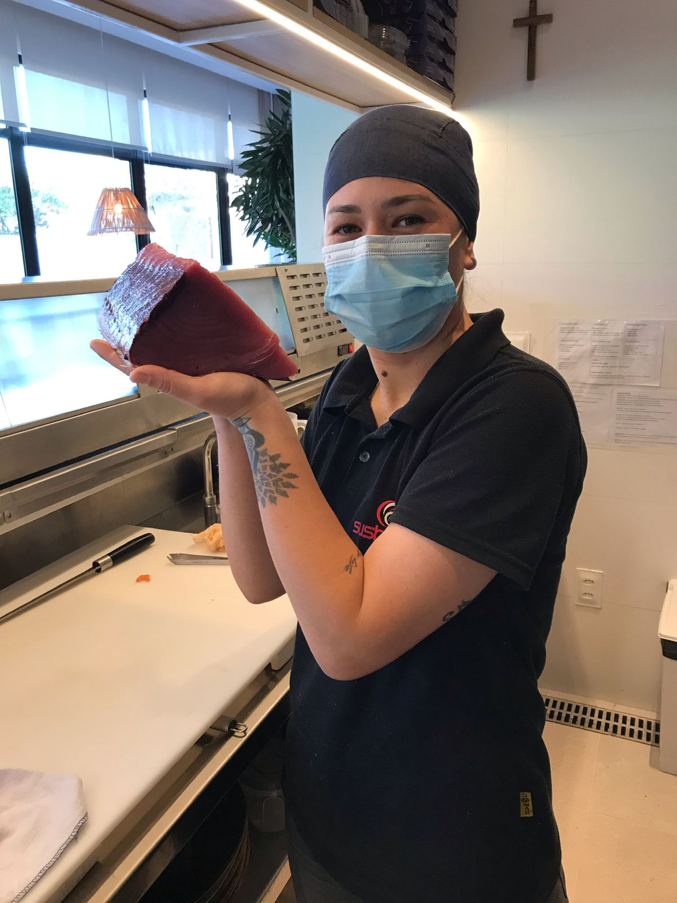
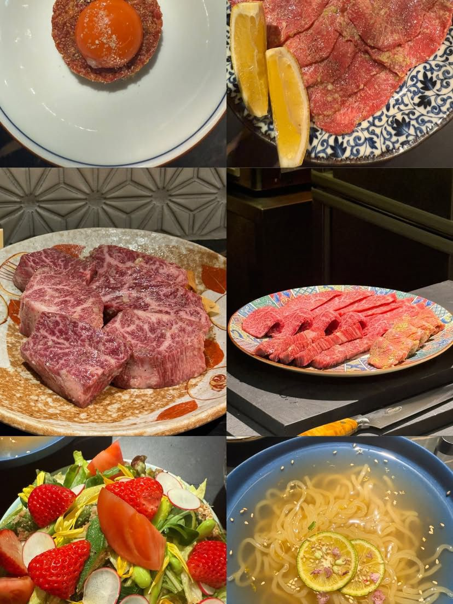

Manifesto
Não se trata apenas de reproduzir receitas.
Trata-se de compreender o ingrediente, escolher a técnica certa, entender temperatura, corte e sazonalidade — e construir uma experiência com propósito.
“Não quero ensinar você apenas a reproduzir receitas japonesas. Quero ensinar você a entender a lógica por trás delas.”

